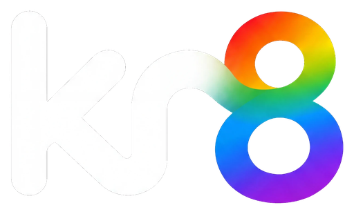

Download kr8
kr8 is a workspace where creative teams and AI agents share spaces, a canvas and their tools. It is an invite-only preview from LaTech. Installed copies update themselves from this page's feeds.
Windows
Checking the latest version…
Download for Windows
macOS
Checking the latest version…
Download for Mac
For Macs with Apple silicon (M1 or later).
Android
Checking the latest version…
Download the APK
On your computer? Scan this with your phone's camera to open this page on the phone.
iPhone
Checking the latest version…
Download the IPA
For sideloading with Sideloadly or AltStore. iOS 16 or later.
Install on a Mac
- Click Download for Mac above and open the downloaded
.dmg. - Drag kr8 into Applications.
- This build is not signed with an Apple Developer ID yet, so macOS refuses to open it. If you already tried, macOS showed “kr8 Not Opened” with Move to Trash as the default button: click Done instead. Then open Terminal and run this once:
xattr -cr /Applications/kr8.app - Open kr8 from Applications. On first launch macOS asks whether kr8 may use its keychain item. Enter your Mac's login password and choose Always Allow. The window appears after you answer; if it seems slow to open, look for that prompt behind other windows.
- kr8 does not update itself on a Mac yet. For a new version, download it here again, replace the app in Applications and repeat steps 3 and 4.
Install on Android
- If you installed an earlier kr8 test build, uninstall it first (long-press the app → Uninstall). It was signed with a different key, so Android won't update over it. You only do this once.
- Tap Download the APK above. When the download finishes, open it.
- If Android asks, allow your browser to install unknown apps, then go back and tap Install.
- Open kr8 and choose Scan a QR code, then on your computer open kr8 → Settings → Mobile and scan the code it shows. Check that the six-digit numbers match on both screens.
- From then on kr8 offers updates itself: Settings → Updates on the phone.
Install on an iPhone
- This build is not in the App Store or TestFlight yet. You install it from a computer with Sideloadly or AltStore (Windows or Mac) and your own Apple ID.
- Download the
.ipaabove on that computer. Connect the iPhone with a cable, drop the.ipainto Sideloadly or AltStore and sign in with your Apple ID when it asks. - On the iPhone, turn on Settings → Privacy & Security → Developer Mode and restart when it asks. Then trust your Apple ID under Settings → General → VPN & Device Management.
- Open kr8 and pair it the same way as on Android (step 4 above).
- With a free Apple ID the app stops opening after 7 days. Install it again the same way to renew it. kr8 does not update itself on an iPhone, and notifications are off in this build.
Preview builds. The Windows installer is not code-signed yet, so Windows may show
“Windows protected your PC”. Choose More info → Run anyway only after checking the file's
SHA-256 against the one on its release page (linked under the button). The Mac app is not signed with an
Apple Developer ID or notarized, and the iPhone app is unsigned until your own Apple ID signs it, so check
their SHA-256 the same way. The Android app installs outside the Play Store: your phone will ask
you to allow installs from your browser once.
After installing
- Open kr8 on your computer and join your community with the invite you were given.
- On your phone, open kr8 and pair it from Settings → Mobile on the computer.
- The Windows and Android apps check this page for updates and offer them inside the app. On a Mac or an iPhone, download the new version here.